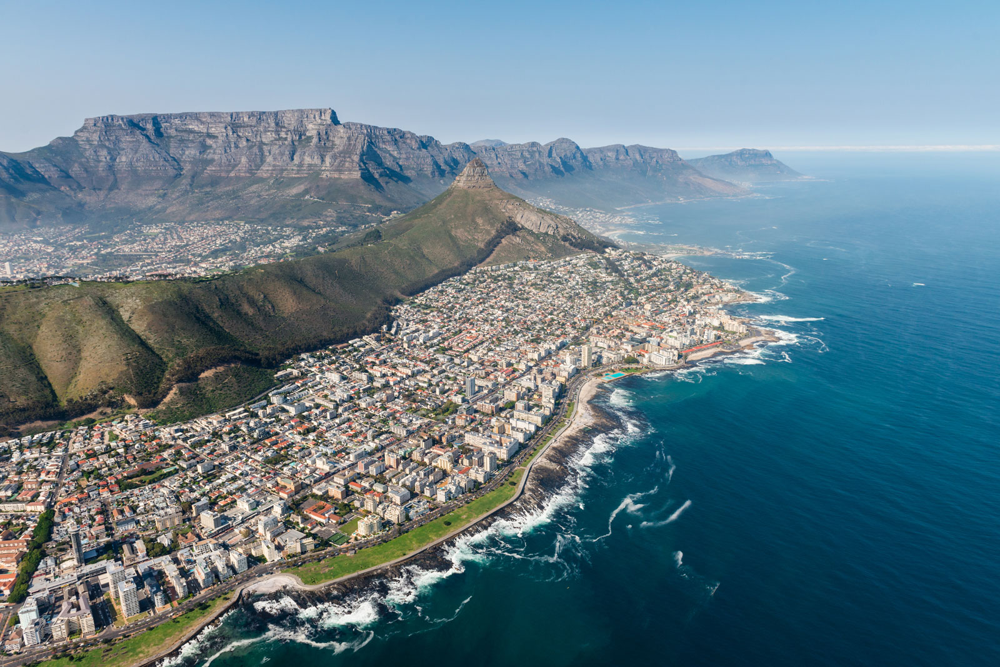
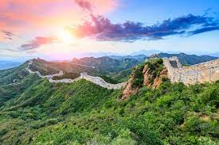
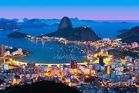

TAJ MAHAL, INDIA
An immense mausoleum of white marble, built in Agra between 1631 and 1648 by order of the Mughal emperor Shah Jahan in memory of his favourite wife, the Taj Mahal is the jewel of Muslim art in India and one of the universally admired masterpieces of the world's heritage.The tomb is the centrepiece of a 17-hectare complex, which includes a mosque and a guest house.

Cape Town is a port city on South Africa’s southwest coast, on a peninsula beneath the imposing Table Mountain. Slowly rotating cable cars climb to the mountain’s flat top, from which there are sweeping views of the city, the busy harbor and boats heading for Robben Island, the notorious prison that once held Nelson Mandela, which is now a living museum.
LEARN MORE
CAPE TOWN, SOUTH AFRICA
Cape Town is a port city on South Africa’s southwest coast, on a peninsula beneath the imposing Table Mountain. Slowly rotating cable cars climb to the mountain’s flat top, from which there are sweeping views of the city, the busy harbor and boats heading for Robben Island, the notorious prison that once held Nelson Mandela, which is now a living museum.LEARN MORE

The Great Wall of China is a series of fortifications that were built across the historical northern borders of ancient Chinese states and Imperial China as protection against various nomadic groups from the Eurasian Steppe. Several walls were built from as early as the 7th century BC.
LEARN MORE
GREAT WALL OF CHINA, CHINA
The Great Wall of China is a series of fortifications that were built across the historical northern borders of ancient Chinese states and Imperial China as protection against various nomadic groups from the Eurasian Steppe. Several walls were built from as early as the 7th century BC.LEARN MORE

NIAGARA FALLS, CANADA
Niagara Falls, waterfall on the Niagara River in northeastern North America, one of the continent’s most famous spectacles. The falls lie on the border between Ontario, Canada, and New York state, U.S. For many decades the falls were an attraction for honeymooners and for such stunts as walking over the falls on a tightrope or going over them in a barrel.LEARN MORE

PARIS, FRANCE
Paris, France's capital, is a major European city and a global center for art, fashion, gastronomy and culture. Its 19th-century cityscape is crisscrossed by wide boulevards and the River Seine. Beyond such landmarks as the Eiffel Tower and the 12th-century, Gothic Notre-Dame cathedral, the city is known for its cafe culture and designer boutiques along the Rue du Faubourg Saint-Honoré.The city lures with its magnificent art, architecture, culture, and cuisine.LEARN MORE

Rio de Janeiro is Brazil's primary tourist attraction and resort. It receives the most visitors per year of any city in South America with 2.82 million international tourists a year.The city boasts world-class hotels, like Belmond Copacabana Palace, approximately 80 kilometres of beaches and the famous Corcovado, Sugarloaf mountains and Maracanã Stadium. While the city had in past had a thriving tourism sector, the industry entered a decline in the last quarter of the 20th century.
LEARN MORE
RIO DE JANEIRO, BRAZIL
Rio de Janeiro is Brazil's primary tourist attraction and resort. It receives the most visitors per year of any city in South America with 2.82 million international tourists a year.The city boasts world-class hotels, like Belmond Copacabana Palace, approximately 80 kilometres of beaches and the famous Corcovado, Sugarloaf mountains and Maracanã Stadium. While the city had in past had a thriving tourism sector, the industry entered a decline in the last quarter of the 20th century.LEARN MORE

STATUE OF LIBERTY, NEW YORK
The Statue of Liberty is a colossal neoclassical sculpture on Liberty Island in New York Harbor within New York City, in the United States. The copper statue, a gift from the people of France to the people of the United States, was designed by French sculptor Frédéric Auguste Bartholdi and its metal framework was built by Gustave Eiffel. The statue was dedicated on October 28, 1886.LEARN MORE

OPERA HOUSE, SYDNEY
Sydney, capital of New South Wales and one of Australia's largest cities, is best known for its harbourfront Sydney Opera House, with a distinctive sail-like design. Massive Darling Harbour and the smaller Circular Quay port are hubs of waterside life, with the arched Harbour Bridge and esteemed Royal Botanic Garden nearby. Sydney Tower’s outdoor platform, the Skywalk, offers 360-degree views of the city and suburbs.LEARN MORE